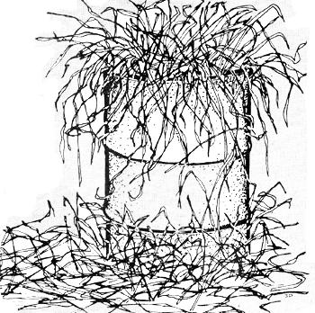

[ More Pictures Here ]
Here in Oregon, hated hay is now selling for between $50.00 and $90.00 a ton, If prices are similar in your area, maybe you've looked into the possibility of raising your own and given up when you found that balers, tractors, rakes, wind rowers, etc, cost a small fortune, But what if you learned that you could put up a ton of bated hay a day or even just half a ton with no outlay other than the expense of a barrel? Well, you can!
First, it's important to realize that many fields of grass which go uncut because of the high cost of conventional haymaking could be harvested by less expensive methods A tractor mower is great if you can get the use of one, but if not, a small meadow can be cut by hand (and raked in the same way).
You may not even have to do any cutting. In this state, the highway department owns a large amount of land in the form of right of-ways some of which may never be used. The tracts are mowed regularly each year and then just left alone and, with proper permission, the grass is yours for the raking. Be careful, however, not to gather hay that has been sprayed, or grown by the side of a really heavily traveled road (motor vehicle exhausts do contain lead, you know). Incidentally, straw left after the harvest of grass seed or grain may also be collected and baled by simple methods.
Amateur haying can be quite effective. One of us, in fact, made a ton of hay in a single long working day just by hand raking cured grass and packing it in a homemade gadget that cost practically nothing and operated very well,
Actually, the idea of a "stationary baler" isn't new many farms formerly had such devices. Although we've never seen one of the old-time models, we understand that the machine was basically a large, cubical mold into which cured hay was piled. A horse was then walked in a circle to raise a weight that, when tripped, dropped to compact the fodder. The advantage of this system over loose storage was slim if there was any at all. The invention we're about to describe is a much smaller unit, intended for use by those who want to put up modest amounts of hay but have no access to standard equipment.
The basis for our love-cost baler is a 55-gallon drum, modified as follows:
[1] Remove one end of the barrel, [2] Cut the container down the middle in half lengthwise to form two equal, semi-cylindrical halves. [3] Weld two hinges, appropriately spaced, to one of the long seams, [4] Welt! two sets of tabs (cut from scrap angle iron) to the edges of the other seam, so that the two sides of the opening are equipped with facing surfaces which can lie clamped together, You'll also need an X-shaped configuration of wood or metal, with a hook or bent nail at each extremity. This device should just fit into the bottom of the container.
To prepare the baler for operation, close the drum and secure the edges of the two halves with clamps screwed to the tabs. Cut two lengths of baling twine no substitutes!.and drape them down in the barrel so that they cross each other at right angles with their center sections held by the hooks at the bottom of the barrel and their free ends hanging over the drum's wall. The ends of the strings are then fastened loosely to a band of twine running around the outside of the barrel, to keep them from falling down inside the container and being lost when the. hay is added.
OK, you're all set to make a lame. Just pack the barrel with loose hay, stomp on the fodder to compact it, and tie each length of twine with a "trucker's hitch": Loop one end of the string, pass the other through the loop, cinch up, and secure the fastening with a double half hitch. Then remove the clamps, open the barrel, and take out your product. You'll find a bundle weighing 50 to 70 pounds not as neat or compact as those formed by the conventional baler, but still a functional, easily stored unit. Yep, this rather primitive method really works and the price of the equipment is hard to beat.
|
 |
|
|